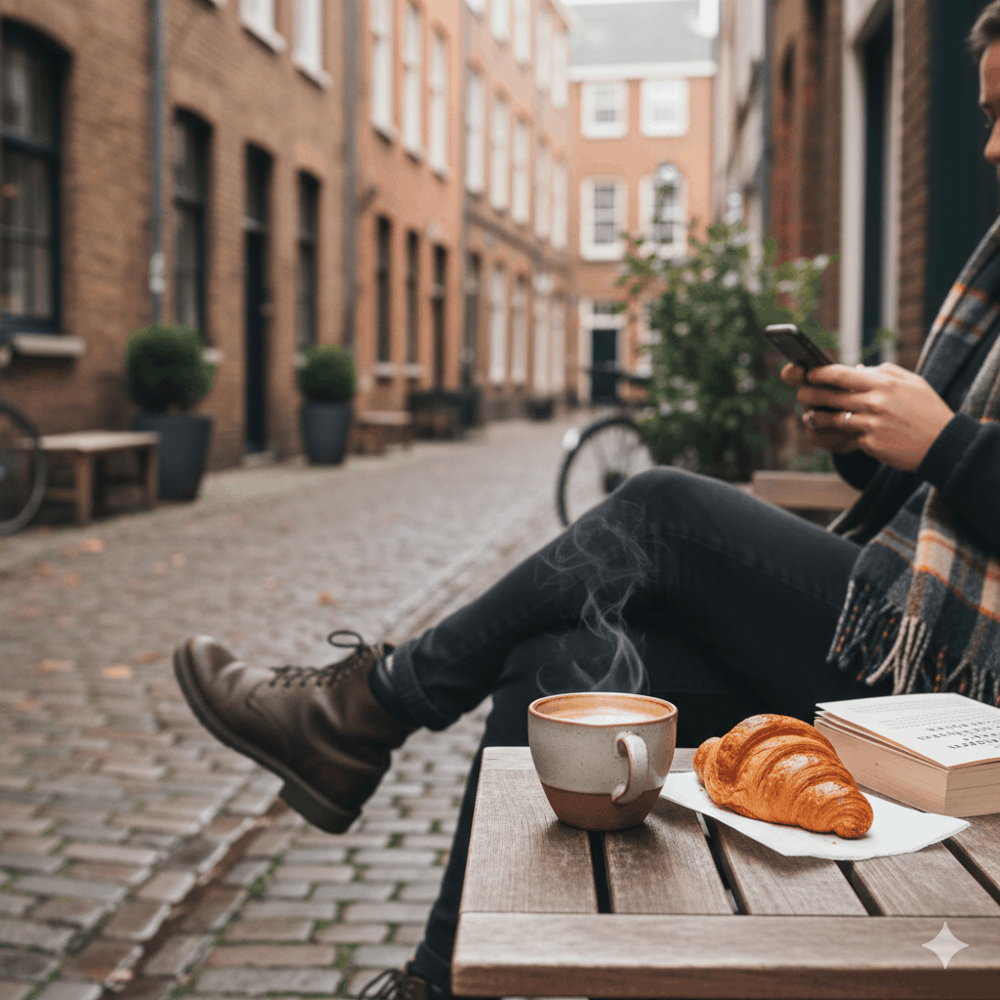

“What started as casual walks through our favorite streets”

Our Story
Our project began with a simple idea: showing friends around the city the way we experience it every day. What started as casual walks through our favorite streets, small cafés, and local markets quickly turned into something more meaningful. We realized that visitors were not just looking for famous landmarks — they wanted to understand how the city truly feels.
Inspired by these moments, we decided to create a community-based tourism initiative focused on authentic local experiences. Instead of scripted tours, we share personal stories, hidden corners, and places that hold real value to the people who live here.
Today, we continue to grow organically, guided by our passion for the city and our belief that travel should be about connection, culture, and genuine experiences.
Find us
Contact:
E-mail: support@buddytravel.fi